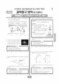

문제지

2023학년도 6월 모의평가 · 2022년 6월 시행
2023학년도 6모 과학탐구 지구과학Ⅰ 1등급컷은 원점수 47점(추정), 표준점수 최고점은 70점입니다.
원점수 1등급컷은 공식 발표값이 아니라 EBSi·입시기관 값입니다. 등급별 값은 등급컷 표, 출처 구분은 데이터 원칙에 있습니다.

시험지를 먼저 풀어 보세요. 등급컷·표준점수·난이도는 흐리게 가려 뒀어요.
| 등급 | 원점수 | 표준점수 | 백분위 | 누적 |
|---|---|---|---|---|
| 1 | 47 | 67 | 95 | 5.87% |
| 2 | 43 | 64 | 88 | 12.55% |
| 3 | 37 | 59 | 76 | 24.68% |
| 4 | 28 | 52 | 60 | 41.41% |
| 5 | 20 | 46 | 42 | 60.57% |
| 6 | 15 | 42 | 26 | 78.07% |
| 7 | 10 | 38 | 11 | 91.93% |
| 8 | 7 | 35 | 4 | 97.73% |
등급별 컷 · 입시기관 3곳 원점수 추정 종합(EBSi·메가스터디·이투스) · 만점 50점
한국교육과정평가원이 교육부 보도자료로 공개한 표준점수 도수분포로 계산했습니다.
EBSi 응답자 기준으로 가장 많이 틀린 문항은 11번(2점)이고, 오답률은 74.8%입니다. 상위 15문항 중 1문항은 정답보다 한 오답을 고른 사람이 더 많았습니다(11번: 정답 ② 25.2%, ④ 37.8%). 오답률 50%를 넘은 문항은 8개입니다.
| 순위 | 문항 | 배점 | 오답률 | 정답 | 많이 고른 오답 |
|---|---|---|---|---|---|
| 1 | 11번 | 2점 | 74.8% | ② | ④ 37.8% |
| 2 | 20번 | 3점 | 67.5% | ③ | ② 19.5% |
| 3 | 19번 | 3점 | 66.3% | ① | ③ 24.4% |
| 4 | 13번 | 3점 | 59% | ⑤ | ④ 29.8% |
| 5 | 17번 | 3점 | 57.7% | ① | ③ 19.7% |
| 6 | 14번 | 2점 | 55.5% | ③ | ⑤ 19.6% |
| 7 | 15번 | 3점 | 51.2% | ② | ④ 16.7% |
| 8 | 10번 | 3점 | 50.7% | ③ | ④ 16.5% |
| 9 | 12번 | 3점 | 48.5% | ④ | ⑤ 19.2% |
| 10 | 7번 | 2점 | 48% | ② | ④ 20.3% |
| 11 | 6번 | 2점 | 47.6% | ① | ③ 25.2% |
| 12 | 16번 | 2점 | 45.3% | ⑤ | ③ 15.5% |
| 13 | 8번 | 3점 | 45.1% | ① | ③ 23.3% |
| 14 | 18번 | 2점 | 42.3% | ④ | ③ 17.2% |
| 15 | 9번 | 2점 | 42.2% | ③ | ① 13.3% |
EBSi 가채점 응답자 기준 · 전 문항 중 오답률 상위 15문항
출처: EBSi 역대 등급컷·오답률 공개 화면. 가채점에 참여한 EBSi 이용자 응답이라 전체 응시자 정답률과는 다를 수 있습니다.
발행 기관: 한국교육과정평가원(KICE). 파일 위치: 이 사이트가 보관한 사본. 저작권은 발행 기관에 있습니다. 원본과 다르거나 게시 중단이 필요하면 연락처로 알려 주세요. 등급컷 출처 구분은 데이터 원칙에서 설명합니다.
막대 색은 역대 대비 난이도 · 진한 막대가 이 시험 · 막대를 누르면 그 회차로 이동
| 회차 | 1등급컷 | 표점 최고 | 1등급 표점 | 난이도 |
|---|---|---|---|---|
| 6모2023학년도이 시험 | 47 | 70 | 67 | 보통 |
| 수능2022학년도 | 43 | 74 | 68 | 매우 어려움 |
| 9모2022학년도 | 48 | 69 | 67 | 쉬움 |
| 6모2022학년도 | 47 | 69 | 67 | 쉬움 |
지구과학Ⅰ 표준점수 최고점은 70점이었고 오답률 50%를 넘긴 문항은 8개였습니다. 가장 많이 틀린 문항은 3점이 아니라 2점짜리 해류 문항 11번이었습니다.
11번(2점, 74.8%)은 서로 다른 두 달의 남태평양 표층 수온 분포를 주고 계절과 해류를 판단하게 했습니다. 남반구는 2월이 여름, 8월이 겨울이므로 계절을 북반구 기준으로 읽으면 첫 진술부터 틀립니다. 아열대 순환에서 대양 서쪽 연안은 저위도에서 고위도로 난류가, 동쪽 연안은 고위도에서 저위도로 한류가 흐릅니다. 서쪽 연안 A의 해류가 고위도 쪽으로 에너지를 옮긴다는 ㄴ만 옳아 정답은 ②였습니다. 응답의 37.8%가 한 오답을 골랐습니다.
20번(3점, 67.5%)은 중심별과 행성이 공통 질량 중심을 같은 주기, 같은 방향으로 도는 외계 행성계입니다. 행성이 A에 있을 때 중심별의 시선 속도가 −60 m/s라면 별은 관측자에게 다가오고 있고, 그때 행성은 멀어지고 있어야 하므로 행성은 A→B→C 방향으로 공전합니다. 행성이 B, C를 지날 때 별의 시선 속도는 최대 시선 속도에 시선 방향과 이루는 각의 코사인을 곱한 값이라는 점도 함께 따져야 했습니다.
19번(3점, 66.3%)은 화강암 속 방사성 원소 X와 자원소의 함량비가 1:3, Y와 자원소의 함량비가 1:1이라는 자료입니다. X는 반감기가 2번, Y는 1번 지났으므로 화강암의 절대 연령은 Y의 반감기와 같다는 ㄱ이 정답(①)이었습니다. 13번(3점, 59.0%)은 지하 온도 분포와 암석의 용융 곡선 그래프입니다. a→a′은 온도 상승, b→b′은 맨틀 상승에 따른 압력 감소, c→c′은 물 공급에 따른 용융 온도 하강으로 마그마가 생기는 과정이고, 이를 실제 변동대에 연결하는 문항이었습니다.